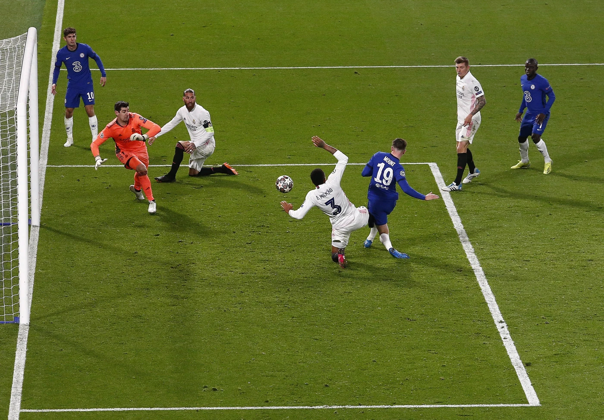

![KARN LA KHRANg NAN Logo]()
ภารกิจตามหาจอกศักดิ์สิทธิ์
'ความพยายามของเชลซีในถ้วยยูโรเปี้ยนคัพนั้นเต็มไปด้วยความอกหักและโชคร้าย นี่คือโอกาสสุดท้ายของพวกเขาที่จะคว้าตำนานที่พวกเขาโหยหา – และตำนานที่พวกเขาสมควรได้รับ เป็นเรื่องยากที่จะนึกถึงครั้งล่าสุดที่ทีมยอดเยี่ยมและแข็งแกร่งอย่างเชลซีทีมนี้พลาดการคว้าแชมป์ยูโรเปี้ยนคัพ'
— หนังสือพิมพ์ The Guardian ก่อนเกมนัดชิงชนะเลิศแชมเปียนส์ลีกปี 2012
เมื่อ ดิดิเยร์ ดร็อกบา ยืนอยู่หน้าลูกบอลที่จะกลายเป็นการเตะที่โด่งดังที่สุดในประวัติศาสตร์ของเชลซี อดีตแชมเปียนส์ลีกของสโมสรต่างถาโถมอยู่บนบ่าของเขา มันเป็นการเดินทางที่น่าตื่นเต้นแม้บางครั้งจะเจ็บปวดทรมานจนมาถึงคืนนั้นที่มิวนิคในเดือนพฤษภาคม 2012 แต่หลังจากสูดหายใจลึกๆ และการตวัดขาขวาของดาวยิงชาวไอวอรีโคสต์ ฝันร้ายในแชมเปียนส์ลีกเหล่านั้นก็ถูกฝังกลบไปตลอดกาล เป็นครั้งแรกที่เชลซีผงาดขึ้นเป็นจ้าวแห่งยุโรป เราต้องต่อสู้อย่างหนักหน่วงเพียงใดกว่าจะมาถึงจุดนี้!
ความผูกพันของเรากับการแข่งขันระดับสุดยอดของทวีปเริ่มต้นขึ้นเมื่อ 13 ปีก่อนหน้านั้น ก่อนที่โรมัน อับราโมวิช จะเข้ามาซื้อสโมสร ทีมสิงห์บลูส์ภายใต้การคุมทีมของ จานลูก้า วิอัลลี และเต็มไปด้วยนักเตะระดับซูเปอร์สตาร์ เช่น มาร์กแซล เดอไซยี่, กุสตาโว โปเยต์ และ จานฟรังโก้ โซล่า รู้สึกผ่อนคลายและเข้าขากันได้ดีเมื่อต้องต่อกรกับทีมที่ดีที่สุดของยุโรป ฟุตบอลของเราทั้งตื่นเต้นและมีประสิทธิภาพ พาทีมทะลุผ่านรอบแบ่งกลุ่มทั้งสองรอบ และสร้างแมตช์แห่งความทรงจำเมื่อต้องดวลกับยักษ์ใหญ่อย่างเอซี มิลาน และ ลาซิโอ
และแล้วยักษ์ใหญ่อีกทีมอย่าง บาร์เซโลน่า ที่มีทั้ง ฟิโก้, ริวัลโด้ และคนอื่นๆ ก็รอเราอยู่ในรอบก่อนรองชนะเลิศ เลกแรกนั้นเหนือจินตนาการ เมื่อทีมสิงห์บลูส์ออกนำไปก่อนถึงสามประตูตั้งแต่ก่อนจบครึ่งแรก ซึ่งเป็นสิ่งที่ไม่เคยเกิดขึ้นมาก่อนที่สแตมฟอร์ด บริดจ์ อนิจจา ห้าจากหกประตูถัดมาในเกมนี้ตกเป็นของทีมจากกาตาลัน ส่งผลให้พวกเขาเป็นฝ่ายเข้ารอบไปได้ แต่ความบาดหมางและการขับเคี่ยวได้ถือกำเนิดขึ้นแล้ว 'ผมจะไม่มีวันลืมบรรยากาศ และความสุขของทุกคนในสนาม' ทอเร อังเดร โฟล ผู้ทำสองประตูในนัดแรกกล่าว 'ในที่สุดเชลซีก็สามารถต่อกรและเอาชนะทีมที่ดีกว่าในยุโรปได้'
🎥 URL YouTube: https://www.chelseafc.com/en/video/history-champions-league-years-1999-2000
🎬 ชื่อ Video: Champions League Years 1999/2000 - A debut in the competition
🙏 ขอขอบคุณ: Chelsea FC
เวลาผ่านไปสามปี ก่อนที่แชมเปียนส์ลีกจะหวนกลับมายังเดอะบริดจ์อีกครั้ง แต่ครั้งนี้ การหลั่งไหลเข้ามาของสตาร์ดังหลังจากที่อับราโมวิชเข้ามาเทคโอเวอร์ ทำให้ความคาดหวังสูงขึ้นเป็นเงาตามตัว หลังจากผ่านรอบแบ่งกลุ่มและรอบ 16 ทีมมาได้อย่างปลอดภัย ไฮไลต์ของแคมเปญยุโรปปี 2003/04 ก็มาถึงที่ไฮบิวรี่ เมื่อประตูท้ายเกมของ เวย์น บริดจ์ ยุติสถิติอันยาวนานที่เราไม่เคยบุกไปชนะอาร์เซนอลได้เลย และช่วยให้เราผ่านเข้าสู่รอบสี่ทีมสุดท้ายด้วยการเขี่ยคู่ปรับร่วมลอนดอนตกรอบ 'มันคือจุดเริ่มต้นที่เชลซีเริ่มจะเหนือกว่าอาร์เซนอล' บริดจ์กล่าวรำลึกในหลายปีต่อมา
แต่เมื่อต้องพบกับ โมนาโก ในรอบรองชนะเลิศ หายนะก็มาเยือน และนั่นเป็นครั้งแรกจากการตกรอบแบบสุดเจ็บปวดถึงสี่ครั้งในรอบนี้ของการแข่งขัน ขณะที่นำอยู่ 2-0 ในบ้านเลกที่สอง ทีมสิงห์บลูส์กำลังจะมุ่งหน้าสู่นัดชิงชนะเลิศ แต่ทีมจากราชรัฐโมนาโกกลับฮึดสู้และตีเสมอได้สำเร็จ โดยได้รับความช่วยเหลือจากความผิดพลาดทางแท็กติกบางอย่าง และความผิดพลาดของผู้ตัดสินตลอดทั้งสองเกม การปะทะกับบาร์เซโลน่าเริ่มต้นขึ้นอีกครั้งในฤดูกาลต่อมา แมตช์สุดคลาสสิกอีกครั้ง คราวนี้ในรอบ 16 ทีมสุดท้าย จบลงด้วยชัยชนะของเราจากลูกโหม่งท้ายเกมของ จอห์น เทอร์รี่ ที่เดอะบริดจ์ ซึ่งเป็นประตูตัดสินจากทั้งหมดเก้าประตูที่ยิงกันตลอดสองเลกที่เต็มไปด้วยดราม่า จากนั้นเราก็จัดการส่ง บาเยิร์น มิวนิค ตกรอบในรอบก่อนรองชนะเลิศ

ทีมสิงห์บลูส์ภายใต้การนำของ โชเซ่ มูรินโญ่ กำลังเดินหน้าคว้าแชมป์ลีกอังกฤษครั้งแรกในรอบ 50 ปี แต่เป็นทีมจากพรีเมียร์ลีกอีกทีมอย่าง ลิเวอร์พูล ที่มาดับฝันของเราในยุโรปฤดูกาลนั้น ความขัดแย้งเกิดขึ้นเมื่อ 'ประตูผี' (ghost goal) ในเลกที่สองของหลุยส์ การ์เซีย ซึ่งเป็นประตูเดียวที่เกิดขึ้นในรอบนั้น ถูกตัดสินว่าข้ามเส้นไปแล้ว แม้ภาพช้าจะยังคงเป็นที่ถกเถียง ไม่ว่าจะอย่างไร เราก็ได้คู่แข่งตัวฉกาจรายใหม่ทั้งในประเทศและยุโรป หลังจากที่บาร์เซโลน่าแก้แค้นความพ่ายแพ้เมื่อปีก่อนด้วยการเขี่ยเราตกรอบในปี 2006 ความอกหักก็กลับมาอีกครั้งด้วยน้ำมือของลิเวอร์พูลในรอบรองชนะเลิศปี 2007 คราวนี้เป็นการพ่ายแพ้จากการดวลจุดโทษ คำสาปในแชมเปียนส์ลีกของเชลซียังคงดำเนินต่อไป และทวีความรุนแรงยิ่งขึ้นในสองแคมเปญถัดมา
ยากที่จะบอกว่าครั้งไหนเจ็บปวดกว่ากัน ในปี 2008 ในที่สุดเราก็ล้างตาเอาชนะลิเวอร์พูลได้ในรอบรองชนะเลิศ ด้วยความช่วยเหลือจากสองประตูของดร็อกบา และจุดโทษของแฟรงค์ แลมพาร์ด ในค่ำคืนที่เต็มไปด้วยอารมณ์ความรู้สึกที่เดอะบริดจ์
ทีมสิงห์บลูส์กำลังจะมุ่งหน้าสู่มอสโก แต่ความหวังของเราที่จะชูถ้วยใบใหญ่ในบ้านเกิดของเจ้าของสโมสรกลับมลายหายไปในสายฝนของรัสเซีย เมื่อแมนเชสเตอร์ ยูไนเต็ด เป็นฝ่ายคว้าชัยชนะในการดวลจุดโทษหลังจากเสมอกัน 1-1 เทอร์รี่มีโอกาสยิงจุดโทษเพื่อชัยชนะให้กับสโมสรที่เขารักและเป็นกัปตันทีม แต่เขากลับลื่นเสียหลักในจังหวะที่ยิง 'การได้เห็นเชลซีคว้าแชมป์แชมเปียนส์ลีกหลังจากสิ่งที่เกิดขึ้นที่มอสโก ทำให้ค่ำคืนที่นอนไม่หลับเหล่านั้นเบาบางลงอย่างแน่นอน' กัปตันทีมผู้ยาวนานของเรายอมรับหลังจากชัยชนะที่มิวนิค ความรู้สึกที่ว่าโชคชะตาไม่ได้อยู่เคียงข้างเราในแชมเปียนส์ลีกยิ่งเพิ่มขึ้นในอีก 12 เดือนต่อมา คราวนี้ ประตูในนาทีสุดท้ายของ อันเดรส อิเนียสต้า สำหรับบาร์เซโลน่า – พวกเขาอีกแล้ว – เขี่ยเราตกรอบรองชนะเลิศ เชลซีบุกไปยันเสมอแบบไร้สกอร์ที่คัมป์ นู ขึ้นนำในเลกที่สองจากลูกยิงสุดสวยของ ไมเคิล เอสเซียง และถูกปฏิเสธจุดโทษหลายต่อหลายครั้งในขณะที่เราพยายามปิดเกม ก่อนที่อิเนียสต้าจะมาพังประตูที่ทำให้เราใจสลาย
สำหรับ ปีเตอร์ เช็ก, เทอร์รี่, แลมพาร์ด และดร็อกบา – ซึ่งเป็นกำลังหลักในการผจญภัยแชมเปียนส์ลีกของเราเกือบทั้งหมด ยกเว้นแค่สองครั้งแรก – มันต้องเริ่มรู้สึกเหมือนว่ามันไม่ได้ถูกกำหนดมาเพื่อพวกเขา ปี 2010 และ 2011 นำมาซึ่งการตกรอบแบบค่อนข้างจืดชืดด้วยน้ำมือของ อินเตอร์ มิลาน และ แมนฯ ยูไนเต็ด ตามลำดับ แต่ความคิดที่ว่ายุครุ่งเรืองในยุโรปของทีมได้จบลงแล้วนั้น กลับถูกทำลายลงอย่างสิ้นเชิงในปี 2011/12 ในระหว่างแคมเปญแชมเปียนส์ลีกที่เต็มไปด้วยอันตรายและจบลงด้วยความรุ่งโรจน์สูงสุด
มีเพียงชัยชนะเหนือ บาเลนเซีย ในเกมนัดสุดท้ายของรอบแบ่งกลุ่มเท่านั้นที่จะรับประกันการผ่านเข้าสู่รอบ 16 ทีมสุดท้าย ซึ่งการพ่ายแพ้ 3-1 ในการไปเยือน นาโปลี ทำให้เกิดการเปลี่ยนแปลงตัวผู้จัดการทีมจาก อังเดร วิลลาส-โบอาส มาเป็น โรแบร์โต้ ดิ มัตเตโอ สมาชิกคนสำคัญของทีมแชมเปียนส์ลีกชุดแรกสุดของเชลซี ทีมสิงห์บลูส์สู้ยิบตาในเลกที่สอง ด้วยความช่วยเหลือจากแข้งเก๋าอย่าง ดร็อกบา, เทอร์รี่ และแลมพาร์ด เกมนัดสองสุดระทึกในรอบ 16 ทีมสุดท้ายต้องต่อเวลาพิเศษ และในนาทีนั้น บรานิสลาฟ อิวาโนวิช ก็ยิงประตูตัดสินชัยชนะ มอบค่ำคืนที่ยิ่งใหญ่ที่สุดคืนหนึ่งที่สแตมฟอร์ด บริดจ์ 'เราได้แสดงให้เห็นว่าเชลซีนั้นสร้างมาจากอะไร' เทอร์รี่ยิ้มกว้าง
🎥 URL YouTube: https://www.chelseafc.com/en/video/history-the-drogba-years
🎬 ชื่อ Video: Drogba - The Chelsea Years
🙏 ขอขอบคุณ: Chelsea FC
หลังจากเอาชนะเบนฟิก้าทั้งเหย้าและเยือนในรอบก่อนรองชนะเลิศ ด่านต่อไปคือบาร์เซโลน่า พวกเขาอีกแล้ว! แต่บางทีพระเจ้าแห่งฟุตบอลอาจจะอยู่ข้างเราในครั้งนี้ ในเลกแรกที่สแตมฟอร์ด บริดจ์ ทีมเยือนพลาดโอกาสทำประตูมากมาย ในขณะที่ดร็อกบาคว้าหนึ่งในโอกาสน้อยนิดที่เรามี เลกที่สองอาจเรียกได้ว่าเป็นเกมที่ไม่ธรรมดาที่สุดในประวัติศาสตร์ของเรา เสียไปสองประตูและเหลือผู้เล่นน้อยกว่าหนึ่งคนเมื่อเจอกับทีมที่หลายคนยกย่องว่ายิ่งใหญ่ที่สุดตลอดกาล แต่ด้วยวิธีการบางอย่าง ทีมสิงห์บลูส์ก็ผ่านเข้ารอบไปได้ ในช่วงทดเวลาบาดเจ็บครึ่งแรก รามิเรส ชิพบอลสุดสวยให้เราขึ้นนำด้วยกฎประตูทีมเยือน และการเล่นเกมรับแบบถวายหัวก็ช่วยยันบาร์ซ่าไว้ได้ในครึ่งหลัง เช็กเซฟแล้วเซฟเล่า ลิโอเนล เมสซี่ ยิงจุดโทษชนคาน และเมื่อเวลาใกล้จะหมด เฟร์นานโด ตอร์เรส ก็หลุดเดี่ยวไปทำประตู เชลซีปีนข้ามภูเขาลูกใหญ่ไปได้แล้ว แต่ยังมีอีกหนึ่งยอดเขาที่ยากลำบากรออยู่: บาเยิร์น มิวนิค ในสนามของพวกเขาเอง
เมื่อขาดผู้เล่นถึงสี่คนเนื่องจากติดโทษแบน ทีมสิงห์บลูส์ต้องใช้แท็กติกการตั้งรับที่เป็นระบบและเด็ดเดี่ยวอีกครั้ง โธมัส มุลเลอร์ ของทีม 'เจ้าบ้าน' โหม่งให้บาเยิร์นขึ้นนำในช่วงท้ายเกม แต่เชลซีก็ไม่ยอมแพ้ เมื่อดร็อกบาทำประตูตีเสมออย่างไม่น่าเชื่อในช่วงไม่กี่นาทีสุดท้าย เช็กเซฟจุดโทษจาก อาร์เยน ร็อบเบน อดีตเพื่อนร่วมทีมของเขาในช่วงต่อเวลาพิเศษ และเซฟอีกสองครั้งในการดวลจุดโทษ ปล่อยให้ดร็อกบามีโอกาสปิดฉากภารกิจตามหาจอกศักดิ์สิทธิ์ที่เต็มไปด้วยการขึ้นลงแบบรถไฟเหาะของเชลซี และมันเป็นโอกาสที่เขาไม่ปล่อยให้หลุดมือ
🎥 URL YouTube: https://www.chelseafc.com/en/video/history-munich-2012-in-slow-motion
🎬 ชื่อ Video: Munich 2012 in slow motion
🙏 ขอขอบคุณ: Chelsea FC
'เพื่อบรรลุความทะเยอทะยานในการเป็นสโมสรระดับโลก คุณต้องคว้าแชมป์แชมเปียนส์ลีกให้ได้ คุณต้องคว้าถ้วยรางวัลอย่างสม่ำเสมอ คุณต้องคว้าแชมป์พรีเมียร์ลีกและแชมเปียนส์ลีกมากกว่าหนึ่งครั้งเพื่อไปให้ถึงจุดสูงสุดของการได้รับการยอมรับอย่างแท้จริงในฐานะสโมสรระดับโลก'
— ปีเตอร์ เคนยอน – ประธานบริหารเชลซี ปี 2004 ถึง 2009
การป้องกันแชมป์ยุโรปปี 2012 ของเชลซี และความพยายามที่จะเพิ่มถ้วยแชมเปียนส์ลีกใบที่สองเข้าไปในตู้โชว์ เริ่มต้นได้ไม่ดีนัก เรากลายเป็นแชมป์เก่าทีมแรกที่ไม่สามารถผ่านรอบแบ่งกลุ่มไปได้ ซึ่งเมื่อรวมกับฟอร์มในลีกที่ตะกุกตะกัก ก็ทำให้ดิ มัตเตโอต้องตกงานก่อนที่ฤดูกาล 2012/13 จะจบลง การไปคว้าแชมป์ยูโรป้า ลีก แทน ถือเป็นรางวัลปลอบใจที่น่าพอใจ และในปีถัดมา เมื่อโชเซ่ มูรินโญ่กลับมาคุมทีมอีกครั้ง ทีมสิงห์บลูส์ก็กลับมาแข่งขันในแชมเปียนส์ลีกรอบลึกๆ ได้อีก ดิดิเยร์ ดร็อกบา กลับมาเยือนสแตมฟอร์ด บริดจ์ พร้อมกับกาลาตาซาราย แต่ก็ต้องพบกับความพ่ายแพ้ และเกิดดราม่าสุดขีดเมื่อเราสามารถพลิกสถานการณ์จากการตามหลัง 3-1 ในการไปเยือน ปารีส แซงต์-แชร์กแมง ในรอบก่อนรองชนะเลิศได้ โดยเดมบ้า บา ยิงประตูชัยก่อนหมดเวลาสามนาที นำไปสู่การเฉลิมฉลองที่น่าจดจำ

อย่างไรก็ตาม เมื่อต้องเผชิญหน้ากับ แอตเลติโก มาดริด ของ ดิเอโก ซิเมโอเน่ ซึ่งมี ติโบต์ กูร์กตัวส์ ผู้รักษาประตูที่ยืมตัวจากเรายืนเฝ้าเสา และ ฟิลิเป้ ลุยส์ กับ ดิเอโก้ คอสต้า ว่าที่ผู้เล่นเชลซีในอนาคตอยู่ในแนวรับและแนวรุกตามลำดับ ความสุขกลับมีน้อยลง และความพ่ายแพ้ที่สแตมฟอร์ด บริดจ์ ก็ทำให้ทีมสิงห์บลูส์ต้องตกรอบ เราจะไม่ได้เข้ารอบรองชนะเลิศอีกเลยไปอีกเจ็ดปี ทีมจากลอนดอนตะวันตกอาจจะเอาชนะ PSG ได้ในฤดูกาลนั้น แต่ทีมจากฝรั่งเศสก็กลายเป็นหนามยอกอกของเราในเวลาต่อมา โดยมาดับฝันของเราในรอบ 16 ทีมสุดท้ายปี 2015 เมื่อ เดวิด ลุยซ์ (ที่คั่นกลางระหว่างการเล่นให้เชลซีสองช่วง) และว่าที่เซ็นเตอร์แบ็กของทีมสิงห์บลูส์ในอนาคตอย่าง ติอาโก้ ซิลวา ต่างก็โหม่งทำประตูที่ฝั่ง Shed End

แต่เราก็ได้แชมป์ลีกในประเทศมาครองแทน ดังนั้นเมื่อกลับมาสู่เวทีระดับท็อปของยุโรปภายใต้การนำของ อันโตนิโอ คอนเต้ ความบาดหมางกับบาร์เซโลน่าก็ปะทุขึ้นอีกครั้งเมื่อเราพบกับทีมจากกาตาลันในรอบน็อกเอาต์รอบแรก ในที่สุด และเป็นจุดจบของความหวังของเรา ลิโอเนล เมสซี่ ก็ทำประตูใส่เชลซีได้สำเร็จหลังจากที่ไม่เคยทำได้เลยในเก้าเกมก่อนหน้านี้ – หนึ่งประตูในเกมเสมอที่เดอะบริดจ์ และอีกสองประตูในเกมที่เราพ่าย 3-0 ที่คัมป์ นู การกลับมาเป็นผู้ท้าชิงแชมเปียนส์ลีกอย่างแท้จริงดูเหมือนจะยังห่างไกล และฤดูกาล 2018/19 ภายใต้การนำของ เมาริซิโอ ซาร์รี่ ก็เป็นอีกหนึ่งแคมเปญที่เราคว้าแชมป์ยูโรป้า ลีก มาครองแทน ในปี 2019/20 ซึ่งมีแฟรงค์ แลมพาร์ด เข้ามารับตำแหน่งกุนซือหมาดๆ มีชัยชนะในรอบแบ่งกลุ่มแชมเปียนส์ลีกที่บ้านของอาแจ็กซ์ บวกกับความตื่นเต้นจากการตามหลัง 4-1 กลับมาเสมอทีมเดียวกันที่เดอะบริดจ์ แต่การตกรอบน็อกเอาต์ด้วยน้ำมือของทีมที่ถูกกำหนดมาให้คว้าแชมป์ทัวร์นาเมนต์อย่างบาเยิร์น มิวนิค นั้นเด็ดขาดไร้ข้อกังขา
🎥 URL YouTube: https://www.chelseafc.com/en/video/chelsea-4-4-ajax---uefa-champions-league--h--ljdgzxate6ztgsbq68f_gchq2fvfy
🎬 ชื่อ Video: REWIND | Chelsea 4-4 Ajax | Champions League 2019/20
🙏 ขอขอบคุณ: Chelsea FC
แล้วโอกาสสำหรับฤดูกาล 2020/21 ซึ่งเป็นแชมเปียนส์ลีกในช่วงกลางการแพร่ระบาดล่ะ? แลมพาร์ดนำทีมดาวรุ่งโฮมโกรนที่ผสมผสานกับการซื้อตัวครั้งใหญ่ในช่วงซัมเมอร์ และแข้งเก๋าตัวหลักอีกไม่กี่คน ผ่านรอบแบ่งกลุ่มมาได้อย่างน่าประทับใจ ชัยชนะเหนือเซบีย่า 4-0 ที่โอลิวิเยร์ ชิรูด์ เหมาคนเดียวทุกประตูนั้นโดดเด่นเป็นพิเศษ เมื่อเข้าสู่รอบน็อกเอาต์ โธมัส ทูเคิล ผู้ซึ่งพ่ายแพ้ในนัดชิงชนะเลิศกับเปแอสเชเมื่อฤดูกาลก่อน ได้เข้ามารับหน้าที่คุมทีม และโมเมนตัมที่สร้างขึ้นจากเกมรับอันแข็งแกร่งก็เริ่มก่อตัวขึ้น แอตเลติโก มาดริด คู่ต่อสู้ที่น่าเกรงขามของทุกคนในรายการนี้มาอย่างยาวนาน ถูกเอาชนะทั้งสองเลก ชิรูด์ทำประตูได้อีกครั้งด้วยลูกตีลังกายิงสุดสวยในเลกแรก และฮาคิม ซิเย็ค กับเอเมอร์สัน ก็ทำประตูจากการสวนกลับที่เดอะบริดจ์ในเกมนัดที่สอง ประตูที่สองนั้นได้รับการต้อนรับอย่างยินดีปรีดาจากเพื่อนร่วมทีมที่ไม่ได้ลงสนามซึ่งอยู่บนอัฒจันทร์ รวมถึงติอาโก้ ซิลวา ที่ได้รับบาดเจ็บ ซึ่งเป็นอีกคนที่พ่ายแพ้ในนัดชิงชนะเลิศเมื่อปีก่อน

ในขณะที่เชลซีถูกจับสลากให้อยู่คนละสายกับ แมนเชสเตอร์ ซิตี้ ทีมที่แข็งแกร่งที่สุดในพรีเมียร์ลีก รวมถึงอดีตแชมป์และรองแชมป์อย่างบาเยิร์นและเปแอสเช ความหวังก็ยิ่งเพิ่มสูงขึ้น แต่ยังคงมีด่านปอร์โต้และเรอัล มาดริดที่ต้องผ่านไปให้ได้ เกมกับปอร์โต้ทั้งสองนัดเล่นในสนามเดียวกันที่สเปน และประตูจาก เมสัน เมาท์ และ เบน ชิลเวลล์ ในการพบกันครั้งแรกก็เพียงพอให้ทีมผ่านเข้ารอบ ในขณะที่เรอัล มาดริด ถือโอกาสในช่วงล็อกดาวน์โควิดเพื่อปรับปรุงสนามของพวกเขา เชลซีจึงพลาดโอกาสเล่นเกมแรกที่เบร์นาเบว แต่เราก็ทำผลงานได้ประทับใจที่สนามฝึกซ้อมของพวกเขาแทน โดย คริสเตียน พูลิซิช โชว์ฟอร์มกลบรัศมีของ เอเด็น อาซาร์ อดีตเจ้าของเสื้อหมายเลขเดียวกัน ในเกมเสมอ 1-1 ชัยชนะในรอบรองชนะเลิศที่สมควรได้รับอย่างยิ่งเกิดขึ้นที่เดอะบริดจ์ โดยตัวรุกชาวเยอรมันอย่าง ไค ฮาแวร์ตซ์ และ ติโม แวร์เนอร์ เป็นคนทำประตูแรกในชัยชนะ 2-0 และในที่สุดเมาท์ก็เปลี่ยนหนึ่งในหลายๆ โอกาสที่สร้างขึ้นเมื่อต้องเจอกับทีมที่ยิ่งใหญ่ที่สุดในประวัติศาสตร์ของการแข่งขันให้เป็นประตูตอกย้ำชัยชนะ

ดังนั้น จึงต้องเดินทางไปยังริมฝั่งแม่น้ำดูโรในโปรตุเกสสำหรับการเข้าชิงแชมเปียนส์ลีกครั้งที่สามของเรา และเป็นครั้งที่สองที่ต้องเจอกับทีมจากอังกฤษด้วยกัน ทีมของทูเคิลเคยเอาชนะแมนฯ ซิตี้ของเป๊ป กวาร์ดิโอล่า มาแล้วสองครั้งในการแข่งขันในประเทศในช่วงไม่กี่สัปดาห์ก่อนหน้านั้น และเช่นเดียวกับในเกมเหล่านั้น แชมป์พรีเมียร์ลีกถูกหยุดยั้งไม่ให้เค้นฟอร์มเก่งออกมาได้ด้วยการจัดระบบที่ชาญฉลาดและฟอร์มการเล่นอันยอดเยี่ยมของเชลซี เมื่อฮาแวร์ตซ์รับบอลจังหวะผ่านบอลอันยอดเยี่ยมของเมาท์ แตะหลบผู้รักษาประตูและแปบอลเข้าตาข่ายในช่วงท้ายครึ่งแรก การขึ้นนำนั้นก็เป็นสิ่งที่เชลซีคู่ควร การเล่นเกมรับที่โดดเด่นทั่วทั้งสนาม โดยมี เอ็นโกโล่ ก็องเต้ ในแดนกลางได้รับรางวัลแมนออฟเดอะแมตช์ ช่วยรักษาสกอร์ไว้ได้ เซซาร์ อัซปิลิกวยต้า ผู้ซึ่งย้ายมาร่วมทีมในช่วงซัมเมอร์หลังจากชัยชนะในแชมเปียนส์ลีกครั้งแรกของเรา ชูถ้วยรางวัลอย่างสง่างาม และไม่มีใครสามารถพูดได้ว่าชัยชนะครั้งนี้ไม่คู่ควร
มันต้องใช้เวลานานกว่าความทะเยอทะยานเดิมที่จะคว้าแชมป์การแข่งขันที่ยิ่งใหญ่ที่สุดของยุโรปมากกว่าหนึ่งครั้ง แต่สถานะของเชลซีในฐานะสโมสรระดับโลกได้รับการรับประกันแล้ว